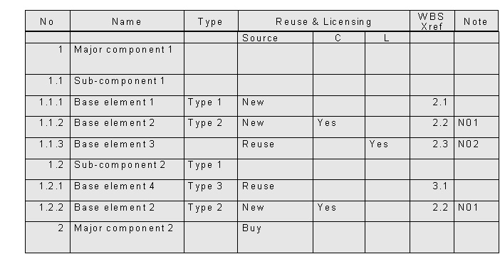

| Artifact: Product Breakdown Structure (PBS) (ENG 340) |
 |
|
The purpose of the PBS is to identify the architecture of the solution and the items that the project must create or reuse as a first step towards defining a strategy to build the solution. A PBS is particularly useful for operational work products, such as hardware or software products, that can be broken down into a relatively large number of components, each of which can be classified according to a relatively small number of types. A PBS is not useful for informational work products, such as some study reports, where the activities (and estimates) depend more on the problem solving approach to be followed than on the work product being built. For example, a project to perform a requirements analysis, will depend primarily on the work patterns derived from the technical methods used to plan the project and therefore will probably not use a PBS. |
| Main Description | The Product Breakdown Structure (PBS) is a hierarchical decomposition of the work products into their components, or their constituent parts. The hierarchy may contain more than one level; for example, a software product may be broken down into a number of subsystems, each of which may be broken down into a number of modules. Each component is given a name and, where feasible, each component at the lowest level in the hierarchy is also assigned to a type; for example, "complex online module", "technical document". The PBS shows how the work products will be built, not necessarily how they will be delivered. Note that, although they are both hierarchical lists, the PBS and the Work Breakdown Structure (WBS) are two very different things. The PBS is a decomposition of the solution into components and elements that the project will make, reuse, or buy; while the WBS shows all the activities that the project team performs. |
||||||||||||||||||||||||||||||||
|---|---|---|---|---|---|---|---|---|---|---|---|---|---|---|---|---|---|---|---|---|---|---|---|---|---|---|---|---|---|---|---|---|---|
| Brief Outline | The structure of the PBS is illustrated in the following diagram. Typically, the hierarchy has more levels than the three shown here.  |
||||||||||||||||||||||||||||||||
| Notation |
|
| Templates |
|---|
The PBS is developed by a process of architecture design. Starting with the operational solution to be delivered, it helps to define the deliverables and then break them down, level by level, into smaller and smaller work products which will have to be produced or bought if existing assets cannot be reused, and assembled. Although the work is carried out by architects, it must be overseen and understood by the project manager. The PBS is created at a high level during Defining activities and refined during Planning. It may be extended during Starting and, perhaps, at later stages in the project. The accuracy and completeness of the PBS is validated by inspection and by ensuring its consistency with the other Project management plans, in particular, the Organizational Breakdown Structure (OBS), the Deliverable Definition, and the WBS. The level of detail may be different depending on the source of each component. Components to build will be refined to such a level that the work to build them is clearly understood, while components to buy or reuse can be kept at a global level, with links to related documentation. |
| Impact of not having | Potential consequences of not building a PBS include:
|
|---|---|
| Reasons for not needing | A PBS is not needed for projects that deliver consulting services only, for example a project that produces only a requirements definition or functional specifications. |
| © Copyright IBM Corp. 1987, 2012 All Rights Reserved Property of IBM These materials are intended only for use as part of an IBM engagement |